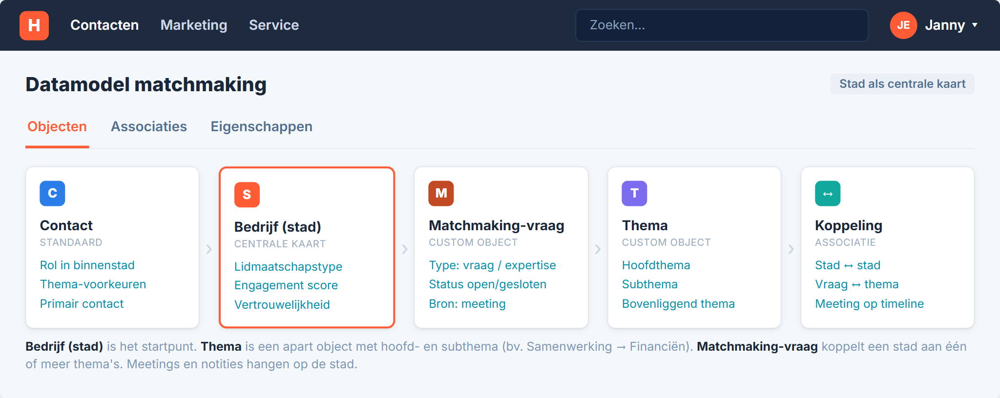
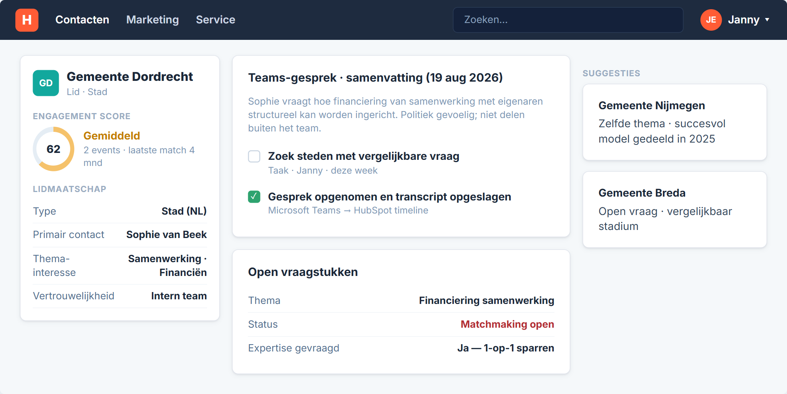
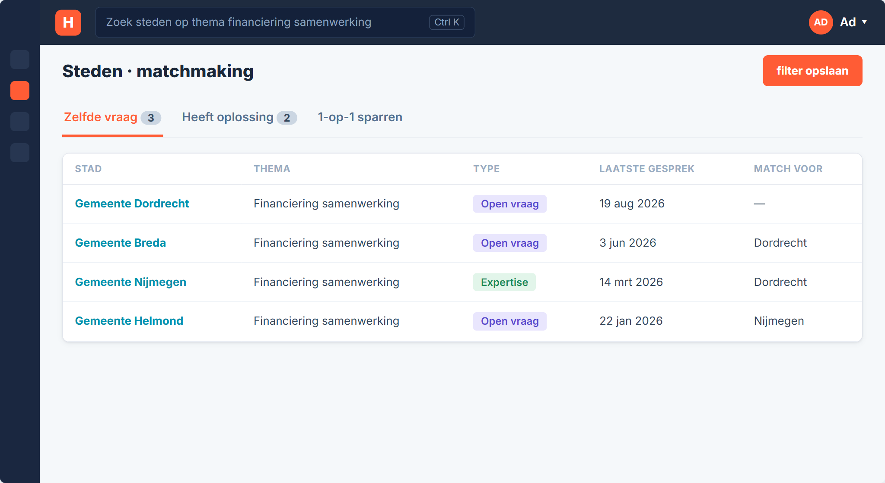
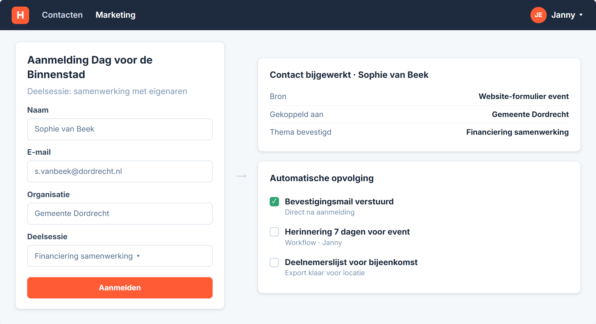
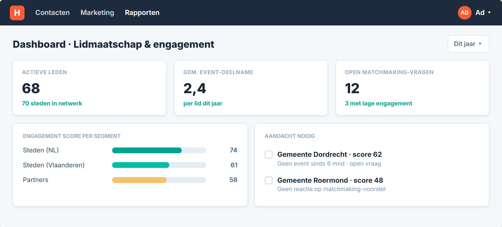

We volgen Gemeente Dordrecht. Sophie van Beek is contactpersoon binnenstad. Ze heeft een vraag over financiering van samenwerking met eigenaren — een thema dat in meer steden speelt.
Het uitvoerend team van Platform Binnenstadsmanagement faciliteert de koppeling. Jullie blijven tussen de steden staan. HubSpot helpt om gesprekken, thema's en vervolgacties op één plek vast te leggen.
Deze walkthrough loopt dat verhaal door. Daarna openen we HubSpot en klikken we dezelfde stappen.
Ad
Coördinatie en matchmaking-beslissingen.
Janny
Events, gesprekken en dagelijkse opvolging.
Sophie
Contactpersoon binnenstad bij Gemeente Dordrecht.
Context
Jouw situatie
Platform Binnenstadsmanagement verbindt circa 70 binnensteden in Nederland en Vlaanderen met partners en kennisinstellingen. Het uitvoerend team werkt parttime. Leden betalen een lidmaatschap.
Microsoft TeamsExcelCity ConnectMailChimpTwinfieldWebsite
Gespreksdata
Verspreid over Excel, Teams en e-mail.
Matchmaking
Handmatig zoeken wie hetzelfde vraagstuk heeft.
Afspraken
Geen centraal overzicht per stad.
Events
Aanmelding en opvolging via losse kanalen.
Engagement
Weinig zicht op activiteit per lid.
Scenario 1
Matchmaking na een stadsgesprek
Teams-gesprekVerslag in HubSpotThema taggenZoeken op matchIntro faciliteren
Sophie bespreekt in Teams een gevoelige vraag over financiering van samenwerking met eigenaren. Het gesprek wordt opgenomen en komt op het record van Gemeente Dordrecht.
Janny tagt het thema en zoekt welke andere steden dezelfde vraag hebben of daar ervaring mee hebben. Steden zien elkaars data niet zelf — jullie faciliteren de koppeling.
Scenario 1
Van Excel naar één stad-record
Nu
Gespreksverslag in Excel
Handmatig zoeken op thema
Context zit bij collega's
Straks
Gesprek en samenvatting op het stad-record
Filter op open vraag vs. expertise
Collega ziet direct wat openstaat
1Teams-gesprek met Sophie van BeekAd / Janny
2Transcript en samenvatting op company-recordHubSpot + Teams
3Thema en vertrouwelijkheid vastleggenJanny
4Lijst met steden op zelfde themaJanny
5Match faciliteren Dordrecht ↔ NijmegenAd
Scenario 1
Het datamodel
Bedrijf is de stad. Contact zijn de personen. Twee custom objects maken matchmaking schaalbaar: Thema (jullie taxonomie) en Matchmaking-vraag (concrete vraag of expertise per stad).
Open vraag of expertise, gekoppeld aan stad en thema.
Stad-record
Meetings, notities, taken en engagement score.
Klik op de afbeelding om te vergroten.

Scenario 1
Handmatig en via Breeze
Handmatig
Matchmaking-vraag aanmaken na gesprek
Thema kiezen uit de taxonomie
Status en vertrouwelijkheid zelf invullen
Via Breeze (met review)
Samenvatting uit Teams-transcript
Thema-voorstel op basis van gesprek
Voorstel matchmaking-vraag — jij bevestigt
Breeze doet het voorwerk. Jullie team keurt altijd goed voordat een koppeling tussen steden plaatsvindt.
Scenario 1 · mockup
Stad-record Gemeente Dordrecht
Gesprekssamenvatting en open vraag. Klik op de afbeelding om te vergroten.

Scenario 1 · mockup
Steden met hetzelfde thema
Klik op de afbeelding om te vergroten.

Scenario 2
Event-aanmelding en gerichte uitnodiging
Event op websiteAanmelding in HubSpotBevestigingHerinneringDeelnemerslijst
De Dag voor de Binnenstad heeft een deelsessie over samenwerking met eigenaren. Sophie meldt zich aan via het formulier op jullie website.
Ze krijgt een bevestiging en een herinnering. Janny trekt met één klik een deelnemerslijst. Steden met interesse in dit thema kunnen proactief worden uitgenodigd.
Scenario 2
Van website naar deelnemerslijst
Nu
Aanmelding handmatig opvolgen
Bevestiging los versturen
Deelnemerslijst in Excel
Straks
Formulier vult contact automatisch aan
Workflow stuurt mails op vaste momenten
Lijst en export uit één systeem
1Sophie meldt zich aan op de websiteSophie
2Contact gekoppeld aan Gemeente DordrechtHubSpot
3Bevestigingsmail automatisch verstuurdWorkflow
4Herinnering 7 dagen voor het eventWorkflow
5Deelnemerslijst exporterenJanny
Scenario 2 · mockup
Aanmelding via website
Klik op de afbeelding om te vergroten.

Scenario 3
Engagement per lidmaatschap
Data verzamelenScore berekenenSignaal bij dalingTaak aan teamProactief contact
HubSpot combineert signalen per stad: event-deelname, e-mailreacties, matchmaking-contact en openstaande vragen.
Gemeente Dordrecht scoort gemiddeld. Janny krijgt een taak om contact op te nemen. Het bestuur ziet welke steden extra aandacht nodig hebben.
Scenario 3
Proactief ingrijpen bij dalende score
Nu
Geen overzicht per lid
Open vragen in Excel of mail
Proactief contact op gevoel
Straks
Engagement score per stad
Taken en signalen op het record
Dashboard voor het bestuur
1HubSpot berekent engagement per stadHubSpot
2Dordrecht scoort onder drempel — taak voor JannyWorkflow
3Janny belt Sophie over open vraag en sessieJanny
4Bestuur bekijkt dashboardAd
Aanname tot we bevestigen: de volledige Customer Success Workspace vereist Service Hub Enterprise. In de demo tonen we het principe via engagement score en taken.
Scenario 3 · mockup
Dashboard engagement
Klik op de afbeelding om te vergroten.

Live demo
Daarna openen we HubSpot
Het verhaal hierboven is de use case. In de portal klikken we dezelfde stappen. Klik op een rij om naar dat scenario te springen.
Later: koppeling met City Connect, volledig ledenportaal en Twinfield vallen buiten de eerste fase.
Open vragen
Wat we nog van jullie nodig hebben
1Wie beslist formeel tussen HubSpot en Dynamics — en op welke criteria?Samen
2Hebben jullie de thema-taxonomie voor matchmaking al op papier?Samen
3Hoeveel HubSpot-gebruikers worden het: alleen het uitvoerend team of ook bestuursleden?Samen